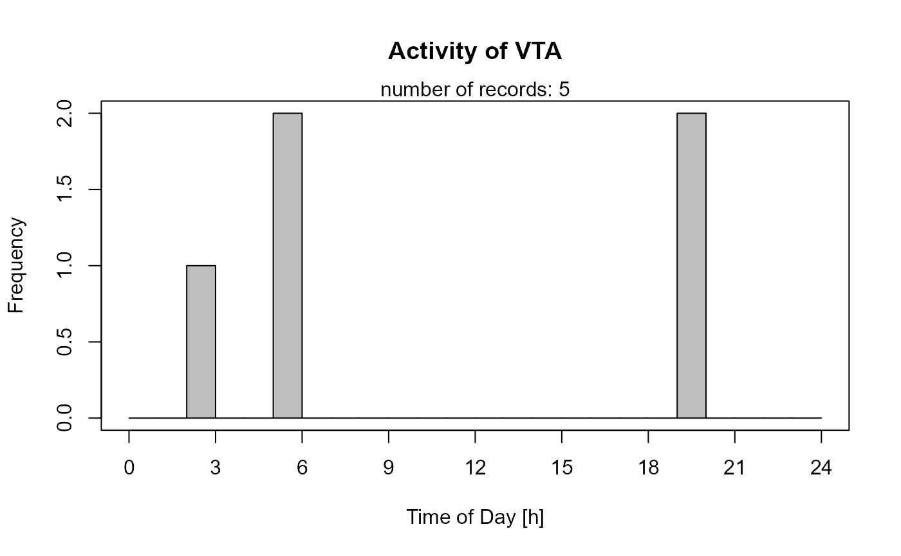

activityHistogram.RdThe function generates a histogram of species diel activity in 1-hour intervals.
activityHistogram(recordTable, species, allSpecies = FALSE, speciesCol = "Species", recordDateTimeCol = "DateTimeOriginal", recordDateTimeFormat = "%Y-%m-%d %H:%M:%S", plotR = TRUE, writePNG = FALSE, plotDirectory, createDir = FALSE, pngMaxPix = 1000, ...)
| recordTable | data.frame. the record table created by |
|---|---|
| species | Name of the single species for which to create a histogram of activity |
| allSpecies | logical. Create plots for all species in |
| speciesCol | character. name of the column specifying species names in |
| recordDateTimeCol | character. name of the column specifying date and time in |
| recordDateTimeFormat | character. format of column |
| plotR | logical. Show plots in R graphics device? |
| writePNG | logical. Create pngs of the plots? |
| plotDirectory | character. Directory in which to create png plots if |
| createDir | logical. Create |
| pngMaxPix | integer. image size of png (pixels along x-axis) |
| ... | additional arguments to be passed to function |
Activity is calculated from the time of day of records. The date is ignored.
recordDateTimeFormat defaults to the "YYYY-MM-DD HH:MM:SS" convention, e.g. "2014-09-30 22:59:59". recordDateTimeFormat can be interpreted either by base-R via strptime or in lubridate via parse_date_time (argument "orders"). lubridate will be used if there are no "%" characters in recordDateTimeFormat.
For "YYYY-MM-DD HH:MM:SS", recordDateTimeFormat would be either "%Y-%m-%d %H:%M:%S" or "ymd HMS". For details on how to specify date and time formats in R see strptime or parse_date_time.
It returns invisibly a vector of species record date and time in POSIXlt format.
If allSpecies == TRUE, all species' vectors are returned in an invisible named list.
If you have a sufficiently large number of records you may wish to consider using activityDensity instead. Please be aware that this function (like the other activity... function of this package) use clock time. If your survey was long enough to see changes in sunrise and sunset times, this may result in biased representations of species activity.
# load record table data(recordTableSample) # generate activity histogram species4activity <- "VTA" # = Viverra tangalunga, Malay Civet activityHistogram (recordTable = recordTableSample, species = species4activity, allSpecies = FALSE)